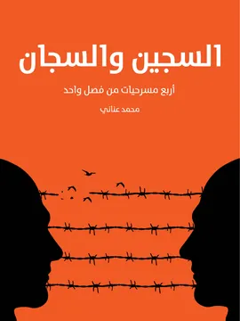

السجين والسجان: أربع مسرحيات من فصل واحد

قراءة عربية أصلية محددة النطاق في الصفحات 11 إلى 13 من ملف PDF المرتبط، وليست تلخيصا كاملا للكتاب. نناقش ما تدعمه هذه المقاطع فقط.
حرية مصدرها اليقين
يبني عناني مسرحيته الأولى على مفارقة الاسم المشترك والمصير المشترك؛ فالسجان يستعرض أمامنا سلطته الظاهرة: المفتاح في جيبه، يدخل وقتما يشاء ويخرج وقتما يشاء، لكنه يعترف في الوقت نفسه بأن مصدر حريته ليس المفتاح بل اليقين، يقين أن كمال هنا. يتجول على المسرح قلقًا يتحسس مخابئ محتملة تحت السرير ووراء الدولاب وجوّه المكتب، ويضحك بعصبية وهو يعترف بحبه لزنزانة كمال أكثر من أي حتة في السجن، حتى ينكشف أن حاجة السجان إلى سجينه لا تقل عن حاجة السجين إلى حريته، وتنقلب العلاقة إلى مرآة يرى فيها كل منهما الآخر.
زاوية وحدود القراءة
قراءة موجزة من ص ١١ إلى ص ١٣ من أصل ٨٨ صفحة، تعرض مستهل مسرحية «السجين والسجان»، لا المسرحيات الأربع كاملة.
الطبعة والقراءة
هذه النسخة من الكتاب صادرة ومتاحة مجانًا بموجب اتفاق قانوني بين مؤسسة هنداوي والسيد الدكتور محمد عناني.
تنزيل PDF المجاني ↓ القراءة والمصدر الرسمي ↗